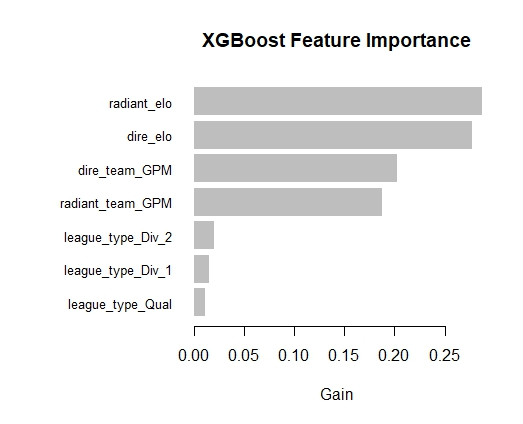

Making the Models
Model Selection
Before diving into the specific models, it is crucial to discuss the rationale behind the model selection process. Multiple machine learning algorithms were considered, including logistic regression, random forests, k-NN, and gradient boosting methods. After careful evaluation and experimentation, two primary models were chosen: XGBoost and Stan's Bayesian logistic regression. Logistic regression was chosen because it can clearly tell which features are the most pertinent, and EDA revealed that the features fit the assumptions. XGBoost was chosen because it is a generally powerful binary classification algorithm. 
Feature Selection
Selecting appropriate features is crucial for building effective predictive models. In this project, a combination of domain knowledge and data exploration techniques such as step-wise selection guided the selection of features. The following features were included in the models:
- Radiant Team GPM: The average Gold Per Minute (GPM) of the Radiant team.
- Radiant Elo: The Elo rating of the Radiant team, representing their skill level.
- Dire Team GPM: The average GPM of the Dire team.
- Dire Elo: The Elo rating of the Dire team.
- Tournament Type: A categorical feature indicating the type of tournament (e.g., Major/Division 1, Division 2, Qualifier). This feature was encoded using dummy variables to capture its effects in the models.
In the end, after experimenting with the various features, I selected these 5 because they lead to the models with the lowest LOOIC (the leave-one-out cross-validation (LOO) information criterion) for logistic regression.
Model Comparisons and Insights
Both the XGBoost and logistic regression models provided interesting insights into the game such as:
-
The importance of GPM in determining match outcomes
- While this point might be obvious to anyone with game experience, I did not expect it to be far more important than XPM since XPM seems to be a better indicator of advantage in my games.
- The GPM of the position 1 player, the GPM of the position 5 player, and the range between the two were all terrible predictors, showing the importance of team success as opposed to individual success. This also came as a surprise because the GPM of position 1 players is paramount in my games: it seems like if the carry gets an early gold advantage, the other team has no chance of winning. However, the models would suggest that the wealth of the team is more important than that of the carry.
-
The varying effects of different tournament types on match outcomes, with qualifiers exhibiting higher variance and major tournaments showcasing lower variance.
- As expected, the model is less certain about matches that occur in qualifier rounds compared to division 1 rounds. This is because the breadth of skill in qualifiers is greater: everyone from the first team to be kicked out to the eventual TI winner must play in the qualifiers.
- As the general skill increased, both of the models tended to favor Dire over Radiant. In fact, when it comes to division 1 and major tournaments, the models generally predict a Dire win unless the Elo and GPM difference significantly favor the Radiant.